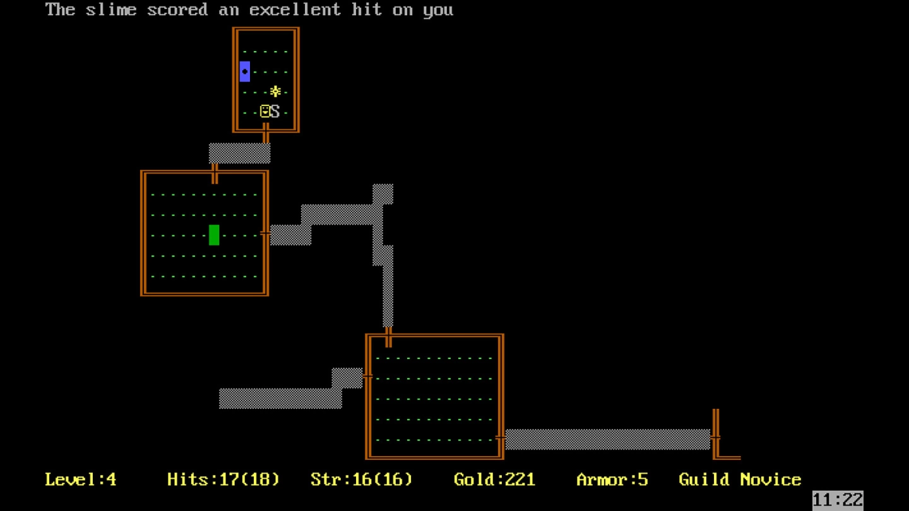

RougeLike
RougeLike，是由一款1980年名為《Rouge》的迷宮探索式遊戲演化而來，混合了奇幻與角色扮演元素，並擁有隨機生成的地圖與永久死亡的機制，玩家必須在探索迷宮時使用隨機生成的關卡與道具，且難度會不斷提升。

在這款遊戲之後，出現具有相同特徵的遊戲，就會被定義成RougeLike。
但久而久之，並非所有 Roguelike 遊戲都一成不變地遵循這種遊戲風格，便逐漸衍生出相對不嚴苛的 Roguelite 版本。